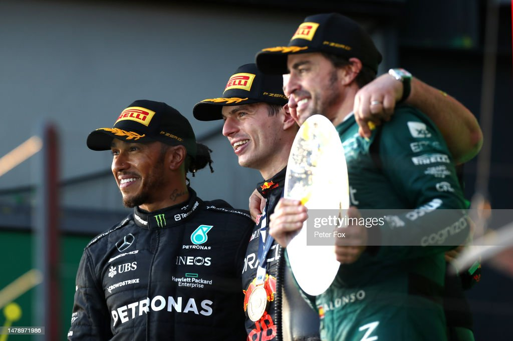

Foto: Getty Imagens
-02/04/2023-
Ontem, quando a gente se preparava, seja para tirar um cochilo, seja para virar a noite e esperar a corrida, aposto que não passou pela cabeça de ninguém o que poderia acontecer!
Literalmente, o GP da Austrália foi a corrida maluca!
Tudo começou bem, com uma largada linda de George, que assumiu a pole já na primeira curva. Max não teve um tempo de resposta tão bom e acabou caindo para P3, pois foi ultrapassado também por Lewis.
Ainda na primeira volta, Charles Leclerc, após toque com Lance Stroll, acabou na caixa de brita, abandonando a corrida e assim tivemos o primeiro Safety Car.
Não tínhamos nem 10 voltas quando um segundo Safety Car foi acionado. Na volta sete, Alexander Albon, que naquele momento era P6, estampou o muro e voltou ficando com parte do carro na pista, trazendo o Safety Car de volta para a pista. Nesse momento,o líder da corrida, George Russell, parou no pit e colocou pneus duros, assim como Carlos Sainz da Ferrari . Alguns instantes depois, foi dada a bandeira vermelha, o que foi péssimo para ambos, que caíram para P7 e P11, respectivamente. Com isso, Lewis Hamilton assumiu a primeira posição. Ele havia reclamado por não ter parado nos boxes e acabou recebendo o P1 no colo.
Depois da pista limpa e o carro do Albon removido, os carros voltaram para a pista para uma nova largada parada. Lewis largou muito bem e manteve o P1, mas por pouco tempo, uma vez que na volta 13, quando foi liberada a abertura de asa, Max o ultrapassou sem dar chance para a defesa de Lewis. A partir desse momento, Max só abriu vantagem. Na mesma volta, já eram quase 3 segundos de diferença.
Quem tinha sido prejudicado naquela bandeira vermelha já estava se recuperando: Sainz já estava em sexto e George em quarto. Mas a sorte não estava do lado do inglês nesse domingo e, na volta 18, seu motor falhou e pegou fogo, fazendo com que ele abandonasse a corrida. Isso causou um Safety Car virtual, já que ele parou bem na saída dos boxes e foi fácil tirar o carro da pista. Nesse momento, Perez, que havia largado dos boxes, já estava em P11 e vendo os pontos ali na frente.
Na volta 31, Max estava tranquilo na liderança, abrindo 8 segundos de vantagem sobre Lewis. Esse, por sua vez, começou a ser atacado por Alonso, que estava pronto para a briga pelo P2. Atrás dele, tínhamos Sainz em P4.
Depois disso, a tranquilidade reinou e o sono começou a bater. Tudo continuava igual e a única briga era de Perez com Norris para chegar a P10.
Uma esperança surgiu nos boxes da Mercedes quando Max perdeu 2,5 segundos de vantagem na volta, mas o que poderia ter sido algum problema no carro foi apenas uma escapada na grama e o holandês continuou tranquilamente em P1. Quando parecia que tudo ia acabar assim, o caos começou quando na volta 54, Kevin Magnussen bateu no muro e perdeu um pneu traseiro, causando um safety car e posteriormente uma bandeira vermelha, faltando apenas três voltas para o final! Na bandeira vermelha, todos foram para o pit lane e as equipes puderam trocar os pneus, o que aconteceu com todos usando pneus macios.
Quase 20 minutos depois, a pista foi liberada, os carros se alinharam para uma nova largada e assim tivemos um caos completo. Max e Lewis largaram muito bem e mantiveram P1 e P2. Carlos Sainz, que largava em P4, acertou Alonso e, a partir daí, foi um salve-se quem puder. As Alpines bateram as rodas, ambas bateram no muro e abandonaram (acho que o clima de amizade e companheirismo acabou hein), Stroll conseguiu desviar das batidas, foi parar na brita, mas conseguiu recuperar o carro. Quem também conseguiu escapar do caos por fora foi Perez. Logan Sargeant e Nyck de Vries também ficaram pelo caminho e, nesse momento, apenas 12 carros permaneciam na pista. Novamente, tivemos uma bandeira vermelha, já que a situação de destroços na pista não era das melhores.
Enquanto os carros estavam alinhados no pit lane, tivemos alguns comunicados de que os carros deveriam voltar às posições em que estavam no momento da relargada. Nesse momento, Alonso voltou a ser P3, e que não teríamos uma nova relargada. Os carros saíram atrás do safety car, deram a volta, e quando ultrapassaram a linha de chegada, receberam a bandeirada. Carlos Sainz, causador de todo o caos, recebeu 5 segundos de punição, o que o fez cair para P12, já que eles estavam proibidos de ultrapassar.
E depois de 30 minutos parados, eles voltaram à pista para completar a volta 58 atrás do safety car.
E pela primeira vez no ano, as duas McLarens pontuaram, Norris em P6 e Oscar Piastri, que marcou seus primeiros pontos em casa, em P8.
Após a corrida, o caos continuou, uma imagem do Max à frente do colchete gerou uma polêmica, mas os sensores provaram que ele ainda estava em cima da linha amarela e, portanto, sua posição era legal. A Ferrari foi até os comissários reclamar da punição, a Haas abriu um recurso sobre a decisão de voltarem às posições na última largada e Pierre Gasly está sendo investigado pela batida em Ocon, o que pode causar a ele uma corrida de punição.
Então, as coisas ainda podem mudar, agora é esperar e aproveitar o assunto até o proximo GP, que é somente dia 28, no Azerbaijão.
Colocação Final do GP da Austrália.

Informações: Fórmula 1